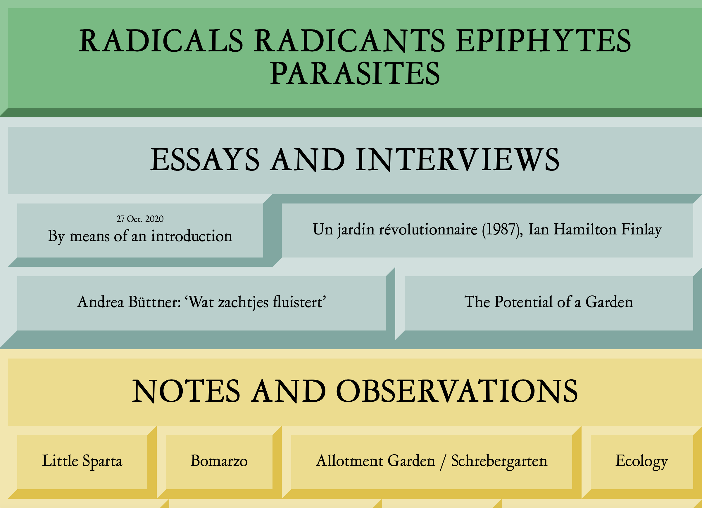

radicalsradicants.com
카테고리별로 색상을 나누어 한 눈에 보기 편하다. 커서를 가져가면 해당 부분의 외곽 선 색상의 위아래가 반전되는데 키보드나 버튼을 누르는 것 같은 효과를 주기 때문에 재미있다.
모바일 화면 사이즈로 축소시킨 웹사이트이다. 첫 번째 웹사이트와는 다르게 가로 세로 폭이 줄어들면서 화면 사이즈에 맞게 웹사이트도 줄어든다. 메인 페이지 외의 화면에서는 가로로 놓여져있던 글들이 세로로 놓여지게끔 바뀐다.
여러 웹페이지로 이루어진 웹사이트이기 때문에 연결된 웹페이지로 이동이 가능하다. 내부는 제목과 사진, 글 순으로 구성되어있으며 가장 하단에는 그 다음 항목으로 이동할 수 있는 버튼이 있다. 손쉽게 이어서 다음 내용을 확인할 수 있어 편리하다. 글의 길이, 자간 사이의 간격 등이 잘 조정되어있어 읽기에 편하고 기사 형식으로 이루어져 있어 눈에 잘 들어온다는 것이 좋았다.